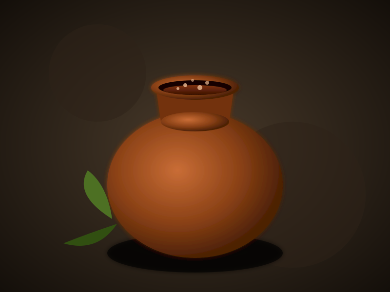

The Science of Sandhana Kalpana
The ancient science of Sandhana Kalpana (biomedical fermentation) is one of the clearest examples of industrial microbiology in antiquity. By boiling raw herbal drugs and inoculating them inside sealed earthen vats, ancient Indian physicians weaponized specific microscopic fungal interactions.
This process generated "Asavas" (fermented fresh juices) and "Arishtas" (fermented decoctions). The natural fermentation process reliably synthesized ethyl alcohol inside the sealed pot. This continuous, anaerobic environment dissolved the active botanical compounds from the plant matter, creating an intensely potent, shelf-stable medicine.


Microbial Inoculation utilizing Dhataki
The real scientific brilliance of this process was how the ancient practitioners ensured correct microbial growth without laboratories. They achieved pure yeast inoculation by employing the flowers of Woodfordia fruticosa (Dhataki).
The dried Dhataki flowers naturally harbored high concentrations of wild Saccharomyces cerevisiae (yeast) on their petals. When added to the herbal broth, this ensured that the correct, specific fungal strain dominated the fermentation batch, preventing spoiling bacteria from destroying the medical components.